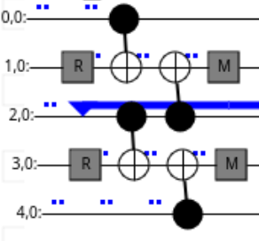
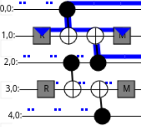
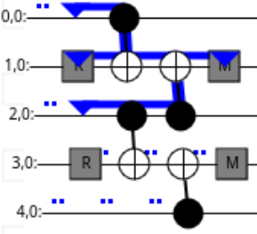

Automatic detector finding#
The tqecd package implements a method to automatically find detectors from a
given quantum circuit representing a quantum error corrected computation.
An accompanying notebook showcasing the different steps to find detectors is located here.
Concepts used through the package#
A few core concepts are re-used through the whole tqecd package. This section aims at
presenting these core concepts in an accessible manner.
Terms that are conventionally used in quantum computing, such as “circuit”, will not be defined here.
Moments#
The concept of “moment” is central to tqecd. A “moment” is a portion of a
quantum circuit that is located between two TICK instructions. Conventionally,
moments may end with a TICK instruction, but do not start with one.
This definition is close, but not equivalent, to the definition used by cirq. One of
the main difference is that cirq defines a moment as a sub-circuit of depth 1: no
instruction in the moment overlaps with another instruction in the same moment.
In the definition given above, there is no notion of depth, and even though TICK
instruction are generally used in stim to denote the passage of time such as the moment definition above
is equivalent to the definition used by cirq, this is not required.
For example, the circuit
R 0 1 2 3 4
TICK
CX 0 1 2 3
TICK
CX 2 1 4 3
TICK
M 1 3
DETECTOR(1, 0) rec[-2]
DETECTOR(3, 0) rec[-1]
M 0 2 4
DETECTOR(1, 1) rec[-2] rec[-3] rec[-5]
DETECTOR(3, 1) rec[-1] rec[-2] rec[-4]
OBSERVABLE_INCLUDE(0) rec[-1]
contains 4 moments.
Fragments#
Fragments are a collection of moments that check the following order:
zero or more moments composed of reset and any other instructions except measurement instructions,
zero or more moments composed of “computation” instructions (anything that is not a measurement or a reset),
one moment composed of measurement and any other instructions except reset instructions.
The circuit provided in Moments contains 4 moments that form a fragment.
Note that the circuit
M 1 3
DETECTOR(1, 0) rec[-2]
DETECTOR(3, 0) rec[-1]
M 0 2 4
DETECTOR(1, 1) rec[-2] rec[-3] rec[-5]
DETECTOR(3, 1) rec[-1] rec[-2] rec[-4]
OBSERVABLE_INCLUDE(0) rec[-1]
also form a fragment!
Flows#
Stabilizers can propagate through a fragment, but can also be created or destroyed by it.
Let’s use the following quantum circuit to illustrate:
R 1 3
TICK
CX 0 1 2 3
TICK
CX 2 1 4 3
TICK
M 1 3
You can also check it interactively using crumble.
This quantum circuit can “propagate” a stabilizer, for example if a Z stabilizer
on qubit 2 is given as input, a Z stabilizer on qubit 2 is propagated
through:

The quantum circuit also “creates” propagation of stabilizers with its resets, as shown in the illustration below:

Here, the fragment is creating a Z0Z2 stabilizer: the Z Pauli string
comes out of the final moment of the fragment on qubits 0 and 2.
Quantum circuit can also “destroy” some incoming stabilizers with its measurements as shown below:

Here, the fragment is destroying an incoming Z0Z2 stabilizer.
These three kinds of stabilizer propagation are “flows”. A “flow” is describing the way a stabilizer propagates through a fragment.
Collapsing operations#
Collapsing operations are operations that are involved in the collapsing (i.e., “destruction”) or “creation” of flows.
Measurements and resets are the only collapsing operations.
Note that, by construction, collapsing operations can only be encountered at the boundaries (beginning/end) of a fragment.
Boundary stabilizers#
An important data-structure used in the package is BoundaryStabilizer. This
data-structure represents the state of a flow at the boundaries of a fragment.
It stores:
a Pauli string, representing the state of a flow that propagated from one boundary, just before encountering the collapsing operations of the other boundary,
a list of Pauli strings, each representing one of the collapsing operations that will be encountered by the propagated Pauli string,
a list of measurements that are involved (either as sources for a destruction flow or as sinks for a creation flow) in the flow propagation and that will be used later to know which measurements to include in the detectors.
Taking the above example, the following flow:
can be represented by a BoundaryStabilizer instance with the following attributes:
Z0Z1Z2for the stabilizer, as before encountering the measurement, the propagated stabilizer isZ0Z1Z2.[Z1, Z3]as collapsing operations, as the measurements present in the above circuit are performed in theZbasis, and on qubits1and3.a data-structure that will represent the measurement performed on qubit
1, as the only measurement that is taking part in the stabilizer propagation is this one.
As another example, the following flow:
can be represented by a BoundaryStabilizer instance that has exactly the same attributes
as the one described above.
To distinguish between these two BoundaryStabilizer (one representing a creation flow,
the other representing a destruction flow), they will be stored in a data-structure that
will differentiate creation and destruction flows: FragmentFlow (or FragmentLoopFlow).
How detectors are found#
annotate_detectors_automatically() finds detectors by
flow matching, in this order.
The flows of every fragment are built.
Inside each fragment, non-trivial flows that are fully collapsed within that fragment give a detector directly, without any cover search.
Each pair of adjacent fragments goes through
match_boundary_stabilizers. AREPEATblock counts as one unit in the pairing. Its destruction flows are those of its first body fragment and its creation flows are those of its last.Flows that anticommute with their collapsing operations are merged on each side into commuting ones, using a minimal commuting cover (see below).
A creation flow of the left fragment is matched one-to-one with a destruction flow of the right fragment when they are equal after the collapsing operations. Flows with anticommuting operations are skipped.
The remaining flows are matched by an exact cover (
find_exact_cover()) in both directions. Left creation flows are covered by right destruction flows, then right destruction flows by left creation flows. This step is skipped when either side has no flow left, or when both sides have exactly one. The measurements of the detector are the union of the target’s measurements and the symmetric difference of the cover’s measurements.
Minimal commuting cover#
A boundary stabilizer can anticommute with the collapsing operations on the other side of
its fragment, for example a Z stabilizer that meets a Y measurement. Several such
stabilizers are then multiplied together so that the product commutes with the collapsing
operations. find_commuting_cover_on_target_qubits() returns the
fewest of them. Using more than needed removes flows that other detectors could have used.
Take collapsing operations Y0*Y1*Y2 and four boundary stabilizers.
import stim
from tqecd.cover import find_commuting_cover_on_target_qubits
from tqecd.pauli import PauliString, pauli_product
def pauli(text: str) -> PauliString:
return PauliString.from_stim_pauli_string(stim.PauliString(text))
target = pauli("YYY")
sources = [pauli("_XZ"), pauli("Z__"), pauli("ZZZ"), pauli("ZXZ")]
cover = find_commuting_cover_on_target_qubits(target, sources)
print(cover)
print(pauli_product([sources[i] for i in cover]))
[2, 3]
Y1
Z0*Z1*Z2 and Z0*X1*Z2 both anticommute with Y0*Y1*Y2 on all three qubits,
and their product Y1 commutes with it. A single elimination pass would have used the
first three stabilizers instead. The search is exact when the null space of the
anticommutation vectors is small and falls back to a heuristic above that size, which may
return a cover that is not the smallest. The details are in the docstring of the function.
What the minimal cover fixes#
The circuit of a surface-code S gate has a round that switches the data qubits to the Y
basis. Its stabilizers meet Y operations, so the covers above are needed there. The
circuit of a k=1 Y half cube joined to an XZO pipe (the s_gate_x gadget of
tqec, no REPEAT block) is
here.
import stim
from tqecd import annotate_detectors_automatically
circuit = stim.Circuit.from_file("docs/media/detectors/s_gate_x_k1_no_detectors.stim")
annotated = annotate_detectors_automatically(circuit)
print(annotated.num_detectors, len(annotated.shortest_graphlike_error()))
|
detectors |
shortest graphlike error |
|---|---|---|
0.2.1 |
126 |
1 |
this change |
130 |
3 |
The expected distance is 2k + 1 = 3. In the S round the unmodified single
elimination pass returns covers of 5 and 4 stabilizers where 2 are enough. The
5-stabilizer cover is for the target X1*X8*X9*X10*X14*X15*X16*X23. The larger covers
remove flows that four detectors need, and a single fault then goes undetected.
Restoring only the old cover function in the current code gives back 126 detectors and
distance 1. The two figures show the detecting regions of the detectors at the S round
(ticks 41 to 49), red for X and blue for Z. After the change the four red
regions around the S gates are present (Crumble: before,
after).


The figures and Crumble links use the same circuit without noise.
Unrolled fallback#
A detector placed inside a REPEAT body must be valid for every iteration. When a loop
repeats more than once, the matcher checks that the detectors between the last and the
first fragment of the body equal those between the previous fragment and the loop, and
raises TQECDException otherwise. When a TQECDException is raised on a circuit
that contains a loop, the circuit is unrolled and the same flow matching is run on it.
Unrolling expands every REPEAT block and inserts a TICK where one is missing, at
the boundaries between loop copies and between a loop and its neighbouring instructions.
The result has no REPEAT block, so its size grows with the number of repetitions. If
the unrolled circuit does not satisfy the input requirements, the original exception is
re-raised.
Example#
See the accompanying notebook for an example of how to perform automatic detector computation: